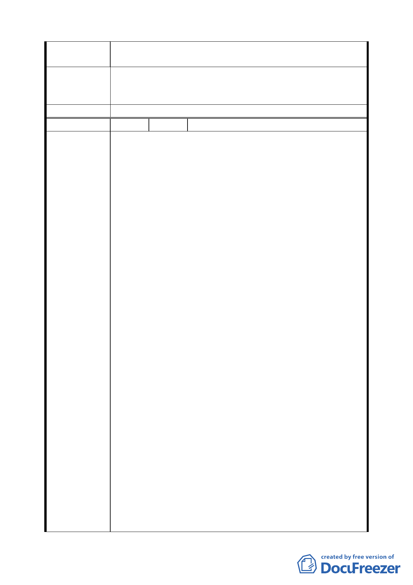

設，則約只剩原有一層面積可用，嚴重損害權益並無興利。
一、提高獎勵並確保原有面積。
建 議 辦 法 二、依原土地離捷運站遠近重訂合理分配辦法。
三、否則反對變更為聯合開發區。
委 員 會 決 議 同編號 1。
編 號 ８ 陳情人 張善評等八人（延平北路三段 4 號）
一、申請人均為座落台北市大同區 589、589-1、590、588
地號等 4 筆土地之共有人（以下簡稱本件 4 筆土地）及
其上建築改良物之所有人。
二、台北市政府捷運工程局將本件 4 筆土地列入本都計案
中，其計畫實有不當，且嚴重損及申請人之權益。謹說
明如下：
（一）本都計案提出理由為「設置捷運系統地下穿越隧道、
出入口及其相關設施，並供作聯合開發基地」。依本
件 4 筆土地相關位置，本件 4 筆土地不列入上開聯合
開發案，亦不影響新莊線捷運系統地下穿越隧道，出
入口及其相關設施之設置。
（二）申請人所有之本件 4 筆土地用途屬第三種商業區，且
已建造 7 層樓商業大樓。按台北市政府捷運工程局所
提出聯合開發計畫案，將本件 4 筆土地由第三種商業
區改編為聯合開發區，各申請人可分配樓層面積將比
陳情理由
原使用面積減少，且申請人尚需支付土地增值稅，不
利於申請人，與土地聯合開發在創造捷運工程局、土
地所有人及投資開發人利益共享達到三贏之目的不
符。
（三）商業區 1 樓之屋價行情為 2 樓以上樓層之數倍，本件
聯合開發區計畫案也將 1 樓價款訂為三倍，但按本聯
合開發區計畫案計算分配時仍按一般樓層計價，僅有
優先承購權，殊不合情理。
（四）本件 4 筆土地原本即為第三種商業區，並且已依法開
發，充分利用，目前建造有 7 層樓鋼筋混凝土構造之
商業大樓壹棟，申請人並利用該建築物各區分所有部
分，自己經營或出租他人經營商業，賴以養家活口。
且本棟商業大樓樓層面積共 4,837 平方公尺，雖屬
30 年建築物，但結構堅實，只需外觀略加修繕，即
可煥然如新，於該區廓之土地利用、街道景觀均有正
面作用。惟如將本件 4 筆土地列入聯合開發，本棟大
樓勢必拆除，政府需耗巨資購地及補償建物，浪費寶
八